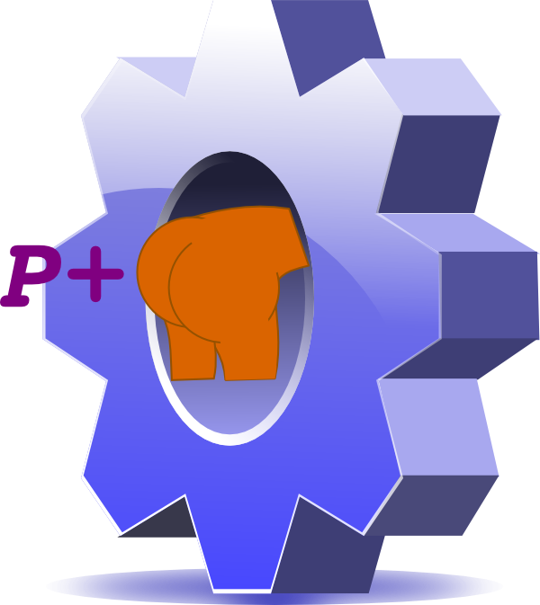
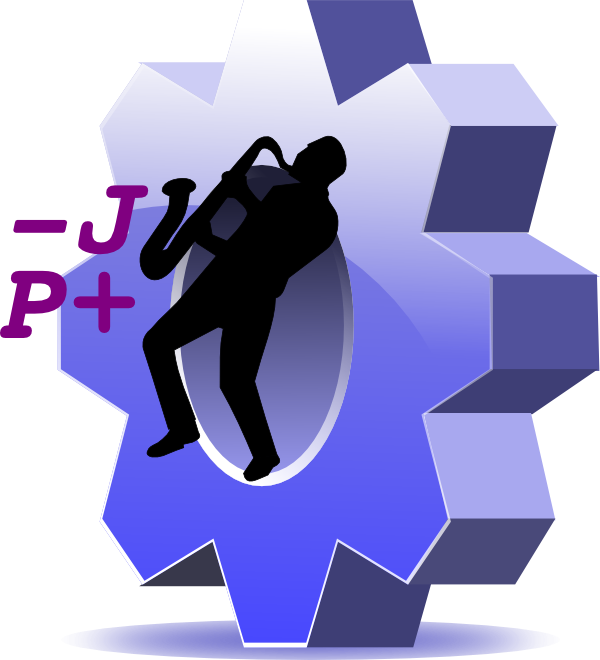
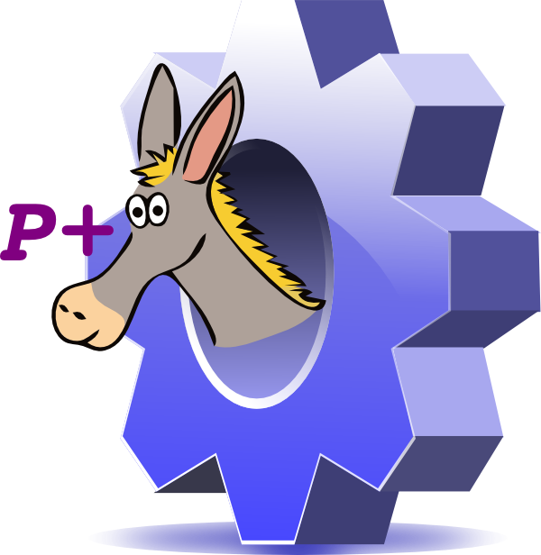
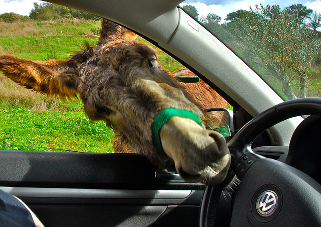
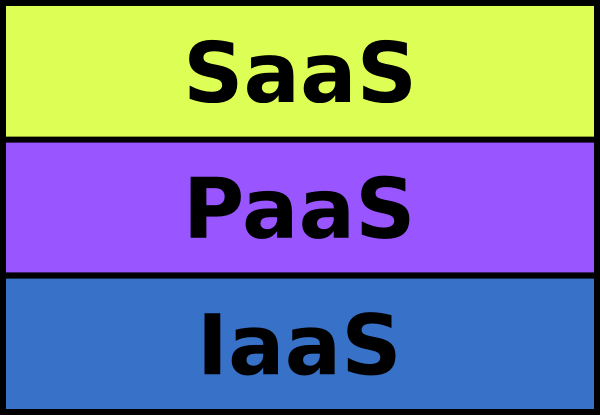
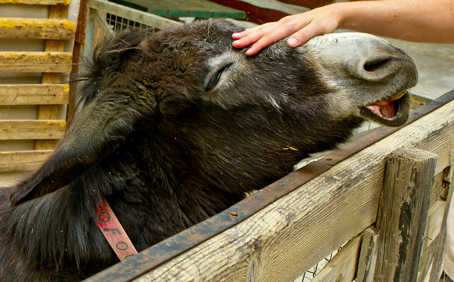
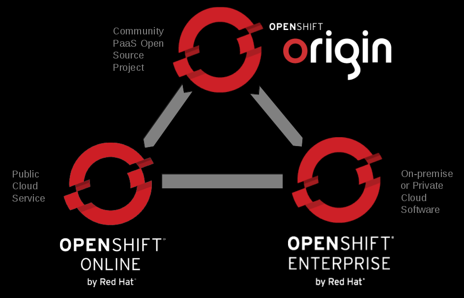

Get Your PaaSInto Gear



An Introduction To OpenShift
Katie Miller (@codemiller)
OpenShift Developer Advocate at Red Hat
Agenda
- Intro to PaaS
- Intro to OpenShift
- Demo
- Questions
So, What's This PaaS Thing Then?
- Platform as a Service, aka a Cloud Application Platform
- May include web servers, programming language runtimes, databases, dev tools, etc.
- Takes care of pretty well everything but your code
Other Cloud Bits and Bobs
- Infrastructure as a Service (IaaS), such as servers, VMs, storage, load balancers, etc.
- Software as a Service (SaaS), such as web-based email clients, CRM systems, games, etc.
Where PaaS Fits In

How PaaS Can Make You Happy

- Focus on code, not config
- Speed of deployment
- Convenience
- Scalablity
- Efficiency
- Polyglot capabilities
Flavours of OpenShift

Image Credits
- Cute Donkey (Jim Champion, CC BY-SA 2.0)
- Donkey Braying (Donkey Sanctuary Press Images, CC BY-NC 2.0)
- Donkey Car Window (F H Mira, CC BY-SA 2.0)
- Donkey Computers (Dave Sag, CC BY-NC-SA 2.0)
- Donkey Mates (Donkey Sanctuary Press Images, CC BY-NC 2.0)
- Donkey Race (John Wright, CC BY 2.0)
- Donkey With Glasses (Donkey Sanctuary Press Images, CC BY-NC 2.0)
- Happy Donkey (Kate Roberts, CC BY-NC-SA 2.0)
- Open Clip Art Library
- Sleeping Donkey (TheFlyingGerbil, CC BY-NC-SA 2.0)
- Upset Donkey (Moose G, CC BY 2.0)